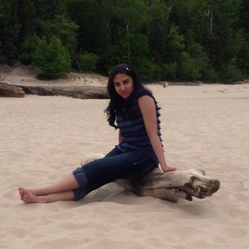

Smita's Portfolio
 Hi there,
I am Smita, I am building my career as a full stack developer.
It is all started with my utilizing time during covid-19 lock down.
I started learning HTML, CSS, Bootstrap, Angular and built small projects .
Success of these initial small projects motivated me to become a full stack
developer. After decent research I got to know a few web concepts I need to
learn to become a full stack developer and few ways to learn those.
After discussing my research with friends and professional full stack developers
I decided to join the boot camp course for full stack developers.
Now the hurdle was to decide which boot camp to join. Again discussing a reliable
friend and also a full stack developer who did a boot camp course in local Portland
I decided to have my full stack developer camp from Epicodus. After going through
introductory videos of the Epicodus I liked the way pair people learning happens
in Epicodus the concepts and whole structure of the which is expected help learn
skills fast and robustly . I am pet lover so i have made a web page on cats
and dogs , I love to travel , I like to vist new place
and i also made website on Maldives private island Resort.
Here i am working on HTML and CSS.
About Me:
I have completed Bachelor of Computer Applications on 2007. And also I did Master of Computer Science on 2009.
Projects List:
- Pizza Parlor
- pets Webpage
- Private Island Resort
- Cup Cake Shop website
- Flashcard
- Sand Castle
- Voting
Project details:
-
Pizza Parlor: This web application works for a pizza company where a user can choose one or more individual toppings (cheese, pepperoni, artichoke, anchovy, etc) and a size to order a pizza and see the final cost. And there is 2 options carry out and home delivery if you select home delivery redio button the application asks for you to add address form. (click here)
-
Pets Webpage: Here we have created web pages on dogs and cats Here we tried to add some images to our webpages. Here we are using img tag to adding some images. Here we also worked on css for styling our web page. (click here)
-
Private Island Resort: Here we have created website on Maldives Prevate Island Resort, Here we worked on HTML and CSS. we are also applying class rules on css style sheets. And also here we are working on box model. (click here)
-
Cup Cake Shop: Here we made Cupcake Shop website , this project contains cupcake history , cupcake types and some images of cupcakes. (click here)
- Flashcard:Here we have created website on Flashcard for javaScript and jQuery Developers, here you can get details of javaScript and jQuery concepts (click here)
- Sand Castle:Here we have created website on Giant sandcastles of this fabulous country, Here we used javaScript and jQuery for functioning. (click here)
- Voting:Here we created website on voiting to check eligibility to vote, here user has to fill the application form depending on his eligibility it will show the message. (click here)